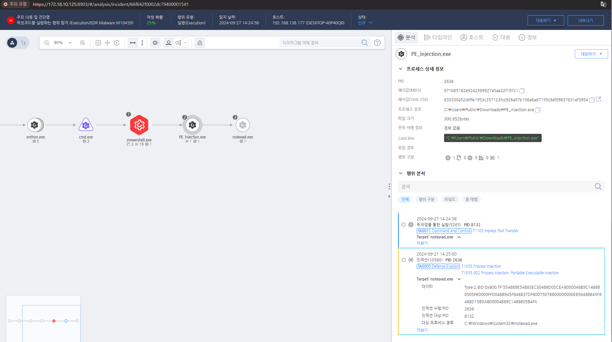

T1055.002.01 Process Injection: Portable Executable Injection
D3FEND
MITRE ATT&CK 액션을 기준으로 대응 방안을 작성
Detection
Injection에 사용되는 주요 API 들에 대한 호출을 모니터링하여 대상이 정상 프로세스일 경우 탐지한다.
Detection(EDR)

Response
Windows API 호출을 모니터링하고, 비정상적인 메모리 수정 또는 스레드 생성 시 경고하도록 설정합니다.
Mitigations
스레드 관련 API 호출 제한 (M1038 - Execution Prevention)
SuspendThread, SetThreadContext, WriteProcessMemory, ResumeThread 등의 API 호출을 제한 - Windows Defender Application Control (WDAC) 또는 AppLocker를 활용하여 비인가된 프로세스 실행 차단
- 보안 솔루션에서 비정상적인 스레드 조작 활동을 탐지 및 차단하도록 설정
EDR/XDR 기반 행위 탐지 및 차단 (M1040 - Behavior-Based Detection)
- EDR(Endpoint Detection & Response) 솔루션에서 스레드 컨텍스트 변경(SetThreadContext) 및 메모리 쓰기(WriteProcessMemory) 탐지
- Sysmon 설정:
- Event ID 8 (CreateRemoteThread) → 원격 스레드 생성 탐지
- Event ID 10 (ProcessAccess) → 다른 프로세스의 메모리 접근 탐지
- Event ID 13 (Process Tampering) → 코드 주입 탐지
메모리 보호 기능 활성화 (M1050 - Exploit Protection)
- Data Execution Prevention (DEP), Control Flow Guard (CFG), ASLR 적용하여 메모리 보호 강화
- AMSI(Anti-Malware Scan Interface) 활성화하여 메모리 내 코드 실행 감시
- Microsoft Defender Exploit Guard의 "Process Injection Protection" 기능 활성화
프로세스 및 권한 관리 강화 (M1018 - User Account Management)
- 일반 사용자가 고권한 프로세스의 스레드에 접근하지 못하도록 제한
- LSASS, SYSTEM 프로세스 보호를 위해 Credential Guard 및 LSA 보호 활성화
- 관리자 계정 사용을 최소화하고 필요 시 UAC(User Account Control) 강화 적용
DLL 및 메모리 인젝션 방어 (M1047 - System Logging & Monitoring)
ProcMon, Process Explorer 등을 사용하여 비정상적인 스레드 생성 및 메모리 수정 모니터링 AppInit_DLLs, IFEO (Image File Execution Options), KnownDLLs 등 DLL 인젝션이 가능한 레지스트리 키 보호 - 비인가된 프로세스가 정상적인 시스템 프로세스의 스레드를 수정하는 경우 차단
Affected Techniques
Action 실행시 함께 영향을 받는 다른 Techniqes
| D3FEND |
| D3-SCA System Call Analysis |
| D3-PCSV Process Code Segment Verification |
| D3-PM Platform Monitoring |